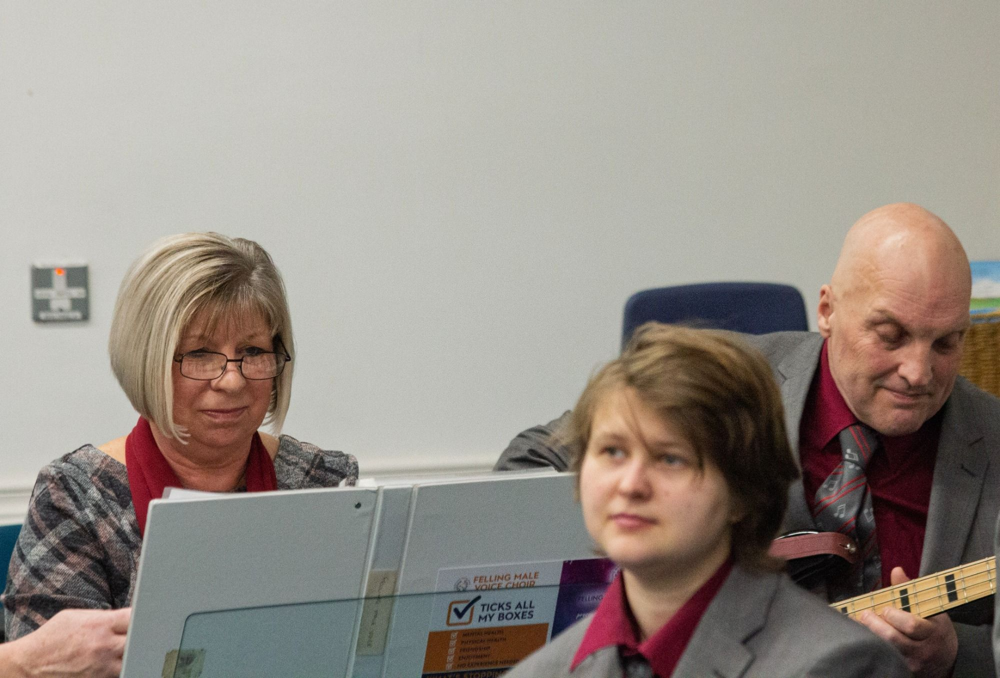
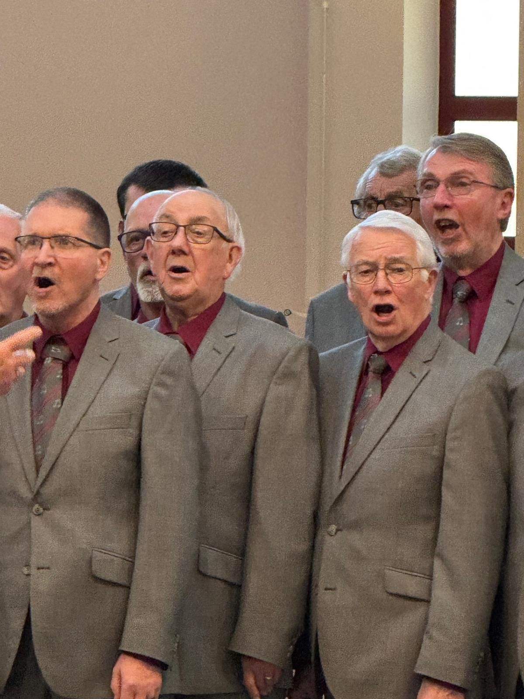
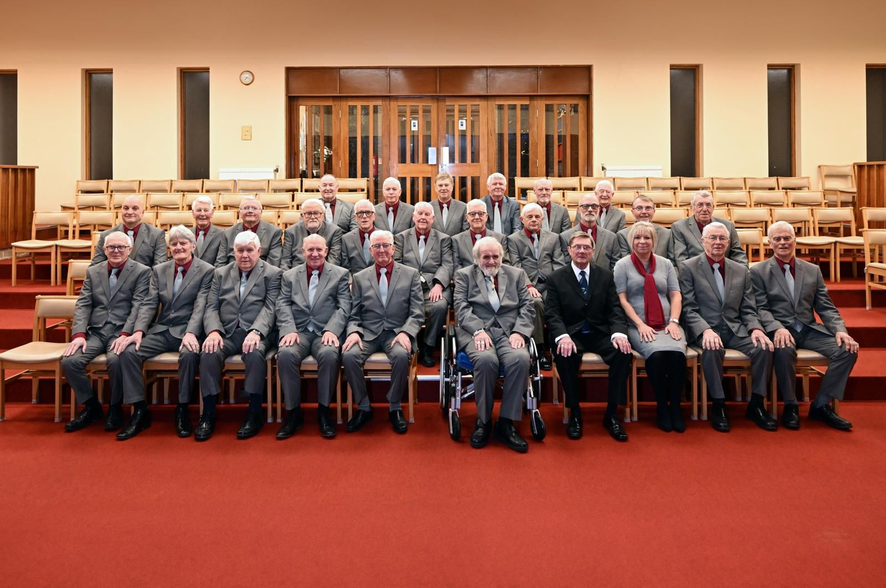

Latest News
-
Felling Male Voice Choir Raise the Roof at Westerhope Golf Club for Maggie's
Last night, Felling Male Voice Choir delivered a memorable and uplifting performance at Westerhope Golf Club, performing to a sell out audience in support of the wonderful charity Maggie's.
Maggie's provides free expert care and support for people living with cancer, as well as their families and friends, through a network of welcoming centres across the UK. Their work helps people navigate the emotional, practical and psychological challenges that come with a cancer diagnosis.
The evening was filled with music, warmth, and a strong sense of community. From the opening notes through to the final applause, the audience response showed just how powerful live choral music can be when combined with a meaningful cause.
Throughout the evening the atmosphere in the room was electric. Laughter, applause and the occasional moment of quiet reflection demonstrated how deeply the music resonated with those present.
Most importantly, the concert helped raise both awareness and funds for Maggie's, a charity that offers a lifeline to thousands of people affected by cancer each year.
Felling Male Voice Choir would like to thank the fantastic audience who filled the venue, Westerhope Golf Club for hosting the event, and everyone who supported the concert and the charity.
Events like this remind us that music can do far more than entertain. It can bring people together, support important causes, and create lasting memories.
And judging by the ovation at the end of the evening, this was certainly one of those nights.
-
Felling Male Voice Choir Concert Raises Funds for Methodist Homes Association
On Saturday 7th February 2026, Felling Male Voice Choir performed a concert in support of Methodist Homes Association at Strathmore Road Methodist Church, Rowlands Gill.
The evening was very well attended, with over fifty people turning out to support both the choir and the vital work of MHA. The audience enjoyed a varied and carefully balanced programme spanning musical theatre, spirituals, popular classics and contemporary favourites.
Highlights from the first half included Music from Les Misérables, Comedy Tonight, The Rose and Anthem from Chess. After the interval the programme moved through sacred pieces such as Non Nobis Domine and Bow the Knee, alongside well loved songs including Close To You, Some Enchanted Evening and All You Need Is Love.
The concert also featured several solo performances, showcasing the individual talent within the choir and adding contrast to the full choral sound.
Funds raised from the evening will support the work of Methodist Homes Association, a charity dedicated to helping older people live later life well through care homes, community groups, befriending services and specialist dementia support.
Felling Male Voice Choir would like to thank everyone who attended, donated, purchased raffle tickets and refreshments, and helped make the evening a success. Special thanks go to Strathmore Road Methodist Church for hosting the event and to all those who supported the organisation behind the scenes. The strong turnout and generous support once again demonstrated the power of community music to bring people together while making a meaningful difference.

-
We've done something a bit special… and we need your help!
Felling Male Voice Choir has teamed up with Age UK North Tyneside to raise vital funds and awareness for people in our community living with dementia — and we've gone all-in with a very Geordie twist.
We've recorded a brand-new, choir-powered version of Blaydon Races, and we're hoping you will download it, share it, shout about it… and maybe just maybe help us race all the way to Christmas Number One!
Why are we doing this? Because every single one of us knows someone touched by dementia. It's a cruel, unforgiving illness, and we wanted to use our voices to make a real difference.
Peter George (FMVC) said: “We all know someone affected by this terrible condition. Recording 'Blaydon Races for Christmas' felt like a fun but powerful way to raise awareness and support the incredible work of Age UK North Tyneside.”
We're so grateful to Joe Allon, NUFC legend and Age UK North Tyneside Ambassador, for backing the song too: “This is an amazing gesture by FMVC. If enough people get behind it… who knows? We might even see it hit the top of the charts!”
And from Age UK North Tyneside, Sonya Roe shared her thanks: “Age UK North Tyneside is deeply grateful to Felling Male Voice Choir and our Ambassadors. Their energy and passion are helping more local families access the support they urgently need.”
-
Felling Male Voice Choir – Summer Concert in Memory of Ridley Potts
Despite the unrelenting rain on Saturday 19th July, spirits were anything but dampened at St Helen's Church, Low Fell, as Felling Male Voice Choir performed their Summer Concert in memory of Ridley Potts — a moving and musical celebration of a much-loved member of the choir family.
The emotional heart of the evening was the world premiere of Rest, Gentle, a beautiful and evocative piece composed especially in Ridley's memory. The harmonies resonated with warmth and sorrow in equal measure, offering a touching tribute that left not a single dry eye (and for once, we're not just blaming the weather).
Guest accompanist Emma Straughan brought poise and sensitivity to the piano, while Michael Scott, as ever, steered the choir with passion and precision. The Choir welcomed Kev Turrington back after an absence, and his presence was felt immensely not just by the baritones, but by the whole choir.
Other highlights included a rousing performance of Anthem from Chess, which stirred an audible reaction from the audience – a blend of admiration and awe that filled the church with appreciative murmurs. And, just when you thought the evening might end in quiet reflection, the choir brought the house down with a show-stopping rendition of Razzle Dazzle from Chicago, sending the crowd home smiling – and possibly singing.
Though the rain lashed outside, inside the walls of St Helen's, there was warmth, laughter, and remembrance. Ridley Potts would have been proud.
-
Fantastic performing at Trinity Square Gateshead
There was more wonderful faces than we ever imagined—thank you all for turning up and showing love!
Two great solo's from Ken and Graham who owned the stage under a warm, golden sky, leaving us cheering for more. How good was “Razzle Dazzle,” ?? it was great to hear that filling the air with Broadway flair and pure joy.
Unfortunately a surprise drizzle trimmed the second half, but spirits stayed high and the music sparkled right through the raindrops. Massive applause for Mike, Julie, and the setup crew—plus an extra salute to Olive, who collected donations in the rain like a champ!
Here's to community, song, and sunny-then-showery memories we'll cherish until next time. Photos courtesy of Kev Lawrence.

-
Visit to Wales – Trelawnyd Male Voice Choir
On 26th April, a party of 50, including 34 singers from Felling Male Voice Choir, boarded a coach bound for North Wales. We were warmly welcomed by our friends at Trelawnyd Male Voice Choir, returning the hospitality they had enjoyed during their visit to us eighteen months ago. The anticipation for this trip had been high — and it did not disappoint!
Under the leadership of Acting Director of Music, Mike Scott, Felling delivered a spirited and varied programme. It was fascinating to hear the contrasting styles of both choirs throughout the evening, showcasing the rich diversity of male voice choral traditions.
The concert, held at St. Peter's Church in Holywell, featured a broad repertoire from both choirs. Felling's programme included a special nod to our North East roots with performances of Adam Buckham O, The Caller, and The Great Langbenton Leek (sung by Mick McCabe). We also bravely ventured into Welsh with a performance of Se Hi Lwli Mabi, much to the delight of our hosts.
Trelawnyd's set included several pieces sung in their native Welsh, as well as Just a Working Man I Am and We Ain't Got Dames. A particular highlight was the stunning contribution of a 17-year-old soloist, whose performance was truly memorable and warmly received.
The evening concluded with both choirs joining forces for a moving rendition of Bring Him Home from Les Misérables. Appropriately, Trelawnyd then gave a rousing finale with the Welsh National Anthem, sung with the passion and pride only the Welsh can deliver.
We are deeply grateful to our assured and talented accompanist, Julie Lawrence, for her support throughout the evening. Our heartfelt thanks also go to Trelawnyd Male Voice Choir for their generosity and friendship. We sincerely hope it won't be too long before our paths cross again.
-
Joint Concert Triumph: Felling Male Voice Choir & Ponteland Ladies Choir
We at Felling Male Voice Choir are still on a high after our recent joint concert with the ever-energizing Ponteland Ladies Choir. The two choirs sounded fantastic together, and the response from the audience proved it was more than just our own excitement talking!
First off, a massive thank-you to our brilliant Assistant MD, Mike Scott, for his leadership on the night. A particular highlight from us at Felling was debuting our new piece, “Bow the Knee,” which was very well-received—clearly, we'll have to keep that one in the repertoire!
We also want to give a special shout-out to Deputy Accompanist Emma Straughan, who stepped in beautifully for her debut performance with Felling. Playing alongside her was a joy, and her confidence (plus a few dazzling flourishes) added something extra to the evening.
Joining us from Ponteland were MD Liz Milner and Accompanist Brian Mercer, whose combined efforts brought the Ladies Choir's repertoire to life. Their rousing final number, a “Medley from Sister Act,” absolutely brought the house down—talk about leaving an audience wanting more! We can't wait to share another stage with them soon.

-
Chairman's Update
The Choir has now ended another successful year of concerts with their Christmas-themed appearance at St.Mary's Church, Heworth. The Choir is in good heart under the direction of Michael Scott as acting Director of Music and looks forward to 2025 with enthusiasm.
Westerhope Golf Club is the venue again for the first concert for charity, on 22nd March when we will be performing in aid of the Dragonfly Cancer Trust, which is a charity for children with terminal cancer. In April the Choir are to journey to North Wales to pay a return visit to Trelawnyd Male Voice Choir, who inform us that they are to be the subject of a film shot over a year recording their vocal life and performances, against the regrettable decline in numbers of those engaged in choral singing.
-
NUFC & FMVC
We had the pleasure to feature in this fantastic kit launch video which celebrated the return of Adidas to Newcastle United FC. We had a great time and were honoured to be invited to feature in such a historic video. Watch the video on YouTube.
We would like to take this opportunity to thank everyone involved.
-
St Oswald's Hospice
We were honoured to perform at Westerhope Golf Course for St Oswald's Hospice. A fantastic well supported concert for a great cause.
-
Patrons
Interested in becoming a patron of the choir? If you are interested in being a Patron of FMVC the cost is only £10 per year. As a thank you you would get two free tickets for the patrons' concert. For more information contact us at patron@fmvc.org.
-
A Wedding to remember for all involved
Felling Male Voice choir were invited to sing at a wedding in October, we love being part of happy couple's special day. The wedding of Jess and Chris will also live in the memory of FMVC members for a long time as it had a musical connection. Jess is none other than the great niece of Opera star Owen Brannigan OBE. The opera singer from Annitsford was internationally renowned and a favourite of many choir members in FMVC.
The wedding was beautiful and we wish Jess and Chris all the happiness in the world. We always appreciate feedback and this is one that really made us smile:
“We had the perfect day and I think it is no exaggeration to say your singing was the highlight. I lost count of how many people said they had never heard anything like it, and it was the absolute cherry on the cake for us.”